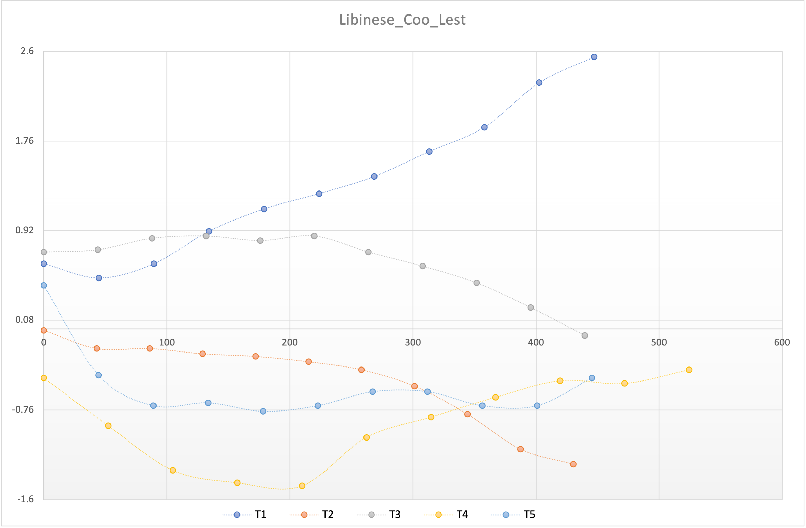

記音人：Noroki
合作人：Coo Lest
聲母
凡例：上行：ipa；中行：蜀拼；下行：例字
| 雙脣 | 脣齒 | 齒後 | 齒龈 | 卷舌 | 硬顎 | 软顎 | ||
|---|---|---|---|---|---|---|---|---|
| 塞音 | 不送氣 | pb把 | td打 | kg歌 | ||||
| 送氣 | pʰp帕 | tʰt塔 | kʰk可 | |||||
| 塞擦音 | 不送氣 | tsz/zh雜渣 | tɕj家 | |||||
| 送氣 | tsʰc/ch擦茶 | tɕʰq恰 | ||||||
| 鼻音 | mm麻 | ŋng我 | ||||||
| 擦音 | 清 | ff法 | ss/sh撒殺 | ɕx夏 | xh何 | |||
| 濁 | v(v)五吳吾無 | zr如 | ||||||
| 近音 | ww瓦文偉 | jy亞 | ||||||
| 邊近音 | ll/n(i)蠟/尼 | |||||||
| 零聲母/声門塞音 | ∅~ʔ0鵝/兒 | |||||||
韻母
| 开尾 | 元音尾 | 鼻音尾 | |||||||||||
|---|---|---|---|---|---|---|---|---|---|---|---|---|---|
| 开口呼 | ɿ-i字 | ɚer兒 | ᴀa大 | oeo/o我 | ai̯ai/iai街 | ei̯e/ei批 | ɑu̯ao包 | əu̯ou走 | anan煩 | ənen硬 | ɑŋang幫 | ʊŋong亩 | |
| 齐齒呼 | iie/i/üe衣/瘸 | i̯aia牙 | i̯ɑu̯iao标 | i̯əu̯iou九 | i̯ɛnian变 | inin兵 | i̯ɑŋiang量 | i̯ʊŋiong用 | |||||
| 合口呼 | v̩u五 | u̯ᴀua瓜 | u̯ai̯uai乖 | u̯ei̯uei类 | u̯anuan段 | u̯ənun春 | u̯ɑŋuang光 | ||||||
| 撮口呼 | yü鱼 | y̯ɛnüan鲜 | ynün泳 | ||||||||||
瘸 üe 歸屬未知
入聲韻母
| 例字 | 入声独立区 | 入派阳平区 | ||
|---|---|---|---|---|
| 韻腹 | 宜宾 | 韻腹 | 成都 | |
| 搭法p | æ | æaq八 | a | a |
| 掐haap3 | iæiaq鴨 | ia | ||
| 刮t | uæuaq滑 | ua | ||
| 入p | ɵ | u̯ɵeoq/ueq/uq盒／國／屋 | ||
| 说t | o | |||
| 出t | u | |||
| 获k | uɛ | |||
| 阅t | yɵioq/üeq/üuq藥／月／育 | yɛ | ||
| 欲k | yo | |||
| 药k | yo | |||
| 湿p | e | eeq/-iq額／失 | ɿ | |
| 黑k | ɛ | |||
| 铁t | ieieq/iq葉／一 | iɛ | ||
| 踢k | i(ɛ) | |||
入聲歸派
| 韻腹 | p | t | k |
|---|---|---|---|
| æ | ○ | ○ | ×1 |
| ɵ | 入 | ○ | ○ |
| e | ○ | ○ | ○2 |
例外
喝ho45
賊tsuei21
鶴hu̯ɵ23/34
聲調

| 調值 | 取值 | 測定 | 成都 | 1941 宜賓縣 |
|---|---|---|---|---|
| 陰平 | 35 | 35 | 45 | 45 |
| 陽平 | 21 | 21 | 21 | 31 |
| 上聲 | 42 | 32 | 42 | 42 |
| 去聲 | 212 | 212 | 213 | 15 |
| 入聲 | 22 | 322 | 23 | 34 |
變調
區分陽平、上聲：
陽平 詞中:
- 奇怪 21 不作213
去聲 詞中：
- 倒影 dao213 yin42
上聲 詞中
- 感觉 gan42-33 jo23
陰平 45
- 词尾 汇丰 hui213 fung45-55